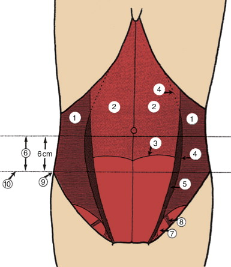
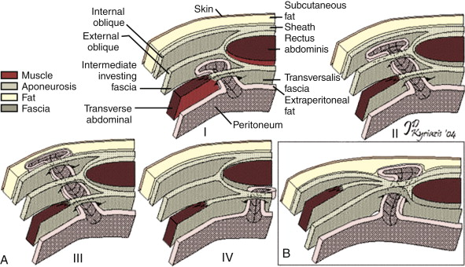
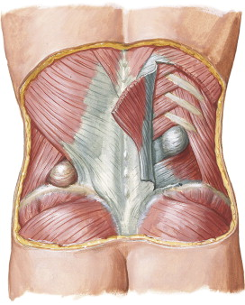

Hernias: Incisional,
Epigastric, Para/Umbilical, Spigelian, Obturator, Lumbar
DEFINITION
A range of hernias discussed here
D E A B M I M
EPIDEMIOLOGY
See individual conditions below.
D E A B M I M
AETIOLOGY
Mechanical; protrusion of contents through a weakness / defect in
the abdominal wall
D E A B M I M
BIOLOGICAL BEHAVIOUR
1. Incisional
~10% of patients who have a midline laparotomy
- 25% if a wound infection develops
2. Epigastric
Attenuated tissues, frequently in obesity
3. Para/Umbilical
True umbilical are usually congenital in origin
Many paraumbilical hernias occur later in life:
- ageing, abdominal girth, pregnancy, pressure
4. Spigelian
Located at semilunar line
- lateral border of rectus sheath from pubic tip to tip of ninth
costal cartilage
Arise in 'spigelian zone'

- ie (6) = spigelian zone; composed of aponeurosis of transversus
abdominus (1) beside rectus sheath (2).
--> 6cm zone between ASIS and umbilicus over aponeurosis at
border of rectus;
- ie. at (4) Semilunar line, and above and below (3); the
semicircular line of Douglas;
- here because of increased width of Spigelian fascia and absent
dorsal lamellae of posterior sheath
Classic location of Spigelian hernia:

Types of Spigelian hernia:

- A = above semicircular line; B = below it.
- even in thin patients the hernia is commonly through transversalis
fascia only, where it may dissect out a decent tissue space
Most commonly contains pre-peritoneal fat, sometimes contains
viscera
5. Obturator
Most common pelvic floor hernia (not including prolapse!) but are
rare.
Obturator foramen formed by
- rami of ischium and pubic bones
- nearly obliterated by obturator membrane, but obturator canal
traverses the foramen, carrying obturator nerve, artery, vein and
fat pad.
Results from laxity of pelvic floor; risk factors:
- females, esp multiparous
- poor nutrition
- increased intra-abdo pressure
E.g. thin, elderly women
6. Lumbar
An uncommon hernia.
Occurs in lumbar space, posterior abdo wall in region of 12 rib

Borders: 12th rib, iliac crest, erector spinae muscles medial,
external oblique laterally.
Within these borders, 95% occur in two defined regions:
- superior lumbar triangle (Grynfeltd): between quadratus lumborum
and posterior free edge of internal oblique
- inferior lumbar triangle (Petit): b/n lat dorsi medially and EO
laterally.
Tend to enlarge with time
- 25% risk of incarceration
--> early repair is indicated when detected.
Parastomal Hernia
Common at stoma sites as clear defect
Risk factors same as for other hernia
Most occur within 2y
Notoriously difficult to treat; 30-50% will require surgical
intervention
- due to obstruction, pain, bleeding, poorly fitting appliance with
leak
Note on Athletica Pubalgia
('Sportsman's hernia' but it is NOT a hernia)
Pubic joint is a dynamic joint involving multiple ligamentous
attachments.
- acts as a fulcrum for many forces from abdomen and leg
- like the knee with cruciates providing support in one axis and
crossing support structures in another axis
- hyper-extension and hyper-abduction cause many of the injuries;
both to soft tissue pubic attachments and supportive soft tissue
structures
--> injuries may accumulate and ultimately may become unstable
like the knee
- primary = uncertain cause, not in athletes, difficult to treat
- secondary = pubis osteitis, in athletes
Refer the patient to an experienced specialist; sports medicine
expert or hip specialist
Management
Rule out a hernia and pelvic diagnoses
- CT abdo pelvis useful for this in many cases
- USS generally not helpful and may mislead
- MRI probably best
Diagnose the muscle attachments involved
Most do not need surgery
- those that do require release, repair or excision operations by an
interested orthopod
D E A B M I M
MANIFESTATIONS
As per hernia type above
Spigelian, obturator and lumbar hernias are a diagnostic challenge
and often are missed.
Spigelian
Painless lump
Sometimes incarceration and obstruction
Lumbar
Asymmetric bulge in the flank.
May present with obstruction
Obturator
External rotation and extension can reproduce pain (but also may
cause pain in OA)
Generally CT and US confirm diagnosis
Majority actually present with bowel obstruction
Examination
Lumps may disappear when supine and reappear with Valsalva or
lifting head from pillow
Lumbar
Evaluate patient in different positions and with straining
D E A B M I M
INVESTIGATIONS
Imaging often useful
US / CT / MRI as required
D E A B M I M
MANAGEMENT
Ventral
Hernias
Indications for repair
1. Pain / discomfort limiting ADLs
2. Cosmesis
3. Risk of incarceration and strangulation
- depends on size, location, hernia features, history of
incarceration
4. Abdominal wall dysfunction.
- abdo wall critical for balance, walking, lifting, straining etc
- ventral hernias may impact on form and function.
--> abdo wall dysfunction impairing quality of life and ADLs
needs repair.
Lap vs Open
Lap preferred for many hernias
Take caution with lap approach in:
- Pts with multiple comorbidities, previous attempts at repair,
previous mesh, loss of domain, abnormally located hernias
Principles
Repair revolves around strength of tissues
Frequently requires a mesh repair
1. Optimize pt health; quit smoking prior to repair and optimize
medical conditions and nutritional status.
2. Complete dissection to reveal all fascial edges
3. Remove fat from fascia such that mesh can sit against collagenous
tissue
4. Dissection of adhesions of all intra-peritoneal regions where
mesh will sit
--> 3cm overlap should be strict
--> except subxiphoid, subcostal, where fixation difficult and
7-10cm is ideal.
Incisional
Generally in midline, where wall strength is good
- but factors predisposing to recurrence usually present (elderly,
obesity, smoking, etc), so mesh repair advised unless very small.
Mesh choice depends on several factors
- if want underlay, may need a layer to separate bowel from mesh,
e.g. Proceed (ethicon)
- or biological mesh
--> mesh overall reduces recurrence from ~25% to ~10%
Mesh position in open repair
Sublay position preferred.
- posterior layer of rectus sheath developed and closed in the
midline
- unprotected mesh placed anterior to this layer.
- anterior sheath then closed.
- disadvantage is that repair is limited by extent to which
posterior sheath can be developed
--> minimum overlap of 3cm is
suggested by evidence, recently
expanded to 4-5cm, particularly in elderly, smokers,
diabetics, and other high-risk pts
Lap vs open
Increasing preference for laparoscopic repair
Allows underlay approach, with strong fixation from below; most
durable repair.
- intraperitoneal position feasible due to modern mesh technology
- allows identification of multiple defects and placement of large
mesh
- shorter stay, faster recovery, decreased overall cost, recurrence
rate low ~5%
Where mesh sits against diaphragm, needs to be hand-sewn into place.
OK for hernias up to ~15cm or so; after that loss of domain may be
significant and e.g. component separation becomes more important
Close the hernia defect?
Some say that it reduces the seroma formation rate
But does not reduce recurrence and may cause more pain, seldom
tension free, so prefer not to do it.
Fixation
Sutures / tacks no more than 5cm apart.
Absorbable tacking sutures now available; last 3-12m
Major Ventral Hernia
Component separation
External oblique aponeurosis opened lengthwise 1cm lateral to rectus
sheath
Then separated from IO aponeurosis
- can be done laparoscopically in plane between EO and IO, inserted
below 11th rib.
Gives 5cm+ of medial movement; 10cm+ if both sides done
Underlay prosthetic mesh and close rectus sheath primarily
Consider a mesh sandwich; underlay of biological (e.g. Permicol, Surgisis) and on-lay
of lightweight polypropylene.
With mesh usage, recurrence rate falls from 33% to 0-17%
Lap component separation described but not commonly done here.
Complications
Loss of domain is significant and pre-op work up / optimization must
be comprehensive
Optimize cardiopulmonary
status, weight loss, stop smoking
Laparoscopic Ventral and Epigastric
Hernia Repair: Method
Principles:
- mesh deep to defect with broad coverage
- requires a bi-layered prosthetic that can be placed over bowel
Planning and Counselling:
Can consider lap approach in all patients with ventral hernia
Warn common to have pain at incision and fixation sites
Warn re risk of bowel injury in advent of extensive adhesiolysis
Warn obese re 4x risk of recurrence and smokers should stop smoking
for 2m prior
Mesh options
Include Proceed, a lightweight
polypropylene mesh with regenerated cellulose coating
Technique
1. Supine, arms in
2. Abx against skin flora
3. Foley catheter to decompress bladder
4. DVT prophylaxis
5. Drape widely such that ports can be placed lateral to the
anterior axillary line
6. Enter at anterior axially line; 11 rib margin, on R or L, open
Hassan technique
7. Lyse abdo wall adhesions using blunt or sharp dissection.
8. Reduce hernia
- combination of gentle traction with atruamatic graspers and
external pressure on abdominal wall
- omental bleeding is the major risk; can be controlled with
cautery, haemoclips, endoloops.
8. When 5cm+ clear, place mesh.
- may need to divide falciform, median umbilical ligament, mobilize
bladder and expose pectineal ligament and pubic bone
- furl and place down port
9. Fix
- various methods, e.g. straight needle through middle and up
through abdo wall to anchor, then tack.
- or, four cardinal permanent sutures at even intervals around the
mesh using a lap suture passer device
--> then tack at 1cm intervals to stop abdo contents creeping up
under and being trapped into the mesh
- one hand external to abdomen supports the tacking device
- mesh should sit well, approximately tautly, following curve and
with no wrinkles
In case of bowel injury during
adhesiolysis
Repair lap or open and complete adhesiolysis
Admit on IV ABx for several days
Then go back in for mesh placement.
- if performed within 3-5d, minimal reforming of adhesions and
repeat adhesiolysis adds little extra morbidity.
Seroma management
A problem with the above technique is that the sac is not excised
leading to seroma formation
- up to 50% of patients concerned by this
Can be mitigated by primary closure of hernia defect using
interrupted sutures prior to mesh placement in selected patients
- absorbable figure-8 sutures
- achieved using a small incision and a suture passer
Ventral hernias
Can be challenging as may require high ligation of falciform and
cannot do transfascial sutures above costal margin
Comment on Biologicals
1. Role not well established by evidence.
2. Role in infected wounds suspect; still get infected and
permanence of repair questionable.
--> prefer a primary tissue
repair in setting of bowel infarction or contamination
3. Must be attached to a source of blood supply e.g. hernia sac,
fascia; not used as bridge or inlay
- need for fascial closure is a significant limitation
4. But if used as an onlay or underlay of small hernia then good
results.
Epigastric Hernia
Mesh should almost always be used, given origin is related to
defective wall strength / attenuation
- a small defect can be approached open
- but ideally needs a good underlay coverage
Ventralex often ideal and may allow closure of defect in smaller
cases.
Else underlay of e.g. Proceed or Atrium pouch for bigger defects
Lap
Small hernias in obese patients and larger defects are best
approached laparoscopically
Large area can be reinforced by a bioprosthetic mesh, particularly
good if divarication of rectus as cosmesis superior
- cf onlay mesh in this context has poor outcomes.
Umbilical Hernia
Use of mesh useful even in small defects
Use mesh unless defect <~1cm in a healthy fit patient with good
tissue
In all cases, mesh should be placed beneath the fascia and not on
top of it.
Ventralex or Atrium mesh are excellent underlay techniques with a
protective coating off bowel
Spigelian
Classic method
Vertical incision through skin, subcut tissue and fascia at edge of
rectus / EO
- hernia sac located at IO level
Open, reduce contents, ligate, and reduce into abdomen.
Free ring of Spigelian fascia from preperitoneum and peritoneal
adhesions
Primary repair using interrupted 1 nylon.
Closing EO defect in similar fashion
Alternatively, preperitoneal mesh can be placed below the fascia
Laparoscopic
No trial evidence due to rarity
But well repaired with an intraperitoneal onlay method; reducing
contents and lysing adhesions to allow a 5cm mesh overlap
- secured using tacks
Shorter stay and lower morbidity.
Either way, risk of recurrence is low, provided tension-free
Obturator
Often diagnosed at laparotomy, where loop of small intestine in
pelvis
May need to incise the obturator membrane, avoiding the nerve,
artery and vein
Inspect bowel for viability +/- resect if reqd
Fix defect with non-absorbable interrupted sutures
Larger defects may require mesh repair
Lumbar Hernia
Fix early as incarcerate
Two main approaches:
- posterior: patient lateral
- anterior: retroperitoneal
Small amenable to primary repair; large should be patched with
synthetic mesh
Superior triangle
Hernia is beneath skin, superficial fascia and lat dorsi
Inferior triangle
Hernia has no muscular covering
Free hernia from surroundings, reduce, stitch / patch with overlap
to surrounding muscles
EO and lat dorsi approximated over the patch as much as possible
Lap approach described; outside usual scope of general surgery.
Parastomal Hernia
Open
1. Stoma-reversal when possible; else:
2. Primary repair
- Circum-stomal incision.
- Dissect out sac.
- Primary fascial repair
- Keyhole technique:
lightweight polypropylene sublay mesh, encircling stoma with a star
cut in centre to sit up on stoma and allow contraction
--> be aware that if too tight, it can obstruct the ostomy
- Solid piece of circumferential
mesh - lower recurrence rate
--> place over defect, except laterally where the stoma exits as
a sort of 'flap valve'
- Close in layers
--> high failure rate and risk of infection
3. Stomal relocation
- probably superior to repair in terms of outcomes to (2)
- but trades fixing one with new opportunities for herniation.
Lap
Has clear theoretical advantages; but studies show basically
the same outcomes.
GA, supine, arms in, 1st gen cef, Foley down ostomy to help
locate the right loop in abdomen
Access in LUQ at midclavicular line, 5mm port opposite ostomy and
two others low and lateral in abdomen.
Lyse adhesions, reduce hernia, covered mesh to flap over defect with
5cm overlap
Tack in place, avoiding stoma
Prophylactic mesh placement
May have a role; but not in our unit!
D E A B M I M
REFERENCES
Cameron 10th